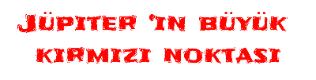

|
|
| ANASAYFA | BİLGİLER | HAKKIMDA | İLETİŞİM | |||||

|
|  |
| Beşinci gezegen olan Jüpiter, Güneş sistemimizdeki en büyük gezegendir. Çoğunlukla gazdan -hidrojen ve helyum- oluşur. En büyük bir özelliği, artık Jüpiter’in karakteristik bir özelliği haline gelen ve büyük kırmızı bir nokta olarak görünen fırtınasıdır. Şüphesiz ki 300 yıldan uzun süren dev bir fırtınanın oluşturduğu bu büyük kırmızı nokta. En ilginç yanı da, bu kırmızı noktanın çapı bakımından Dünya’nın yaklaşık 3 katı kadar büyük olması. |
| Altıncı gezegen olan Satürn, halkaları ile bilinir. Bu halkalar buzlardan ve kayalardan meydana gelir. Ancak Jüpiter, Uranüs ve Neptün’nün de halkaları vardır. Ancak, Satürn’nün kuzey kutbu etrafında dönen dev altıgen halka benzeri yapı başka hiçbir gezegende görülmemekte. Bilim insanları bu altıgen ile ilgili bir fikir ortaya koydu; altıgenin atmosfer boyunca inip çıkan dalgalarla, çalkalanan gaz arasındaki kompleks ilişkiden kaynaklı olduğu düşünülüyor. |
| Dördüncü gezegen olan Mars, soğuk ve tozlu bir yer. Demir oksit olan bu toz, gezegene kırmızımsı rengini verir. Mars’taki toz fırtınaları güneş sisteminin en büyüğüdür, tüm kırmızı gezegeni örter ve aylarca sürebilir. Fırtınanın bu kadar büyük olmasının nedeni havadaki toz parçacıklarının güneş ışığını emerek atmosferi ısıtması ve ısınan atmosferin soğuk bölgelere doğru akmasıdır. |